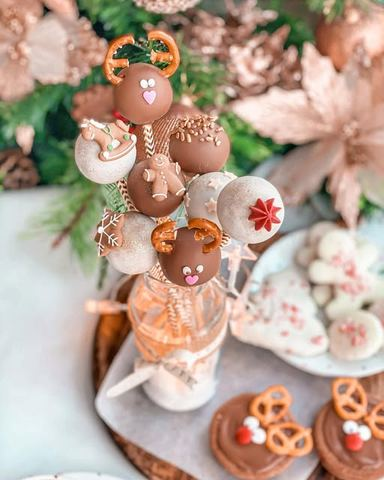

Novogodišnji cake pops

Moja beleška
SačuvanoSastojci
- Za nekih 12 popsica biće vam potrebno
Priprema
Smesu sjedinite i povežete pa je ostavite u frižideru da se lepo ohladi kako bi bila zgodna za rad. Odvajati smesu rukama i formirati kuglice (moje su veličine po 30gr), redjati ih na poslužavnik obložen pek papirom, pa oh vratiti još neko vreme u frižider kako bi bile lepo hladne. Izaberite neke lepe papirne slamčice, tj štapiće za popse, moj izbor su @deko.rs 💓 Potom topite čokoladu, ja ovo radim u mikrotalasnoj u dubljoj staklenoj čaši. Iskrekidano i na po nekoliko sekundi. Kada se istopljena čokolada prohladila dodajem kašičicu ulja kako bi dobila lepšu i redju teksturu. Sam vrh slamčice umocim u čokoladu, pa ubacim u kuglicu od plazme. I tako za sve kuglice. Potom ih uzimam za štapić i svaku kuglicu umačem u čokoladu, otresem visak pa ubacim u času. Naravno prethodno dodajte po neki maleni ukras, perlicu, šljokicu. Kod mene su i dalje aktuelni ovi maleni ukrasi od fondana iz @lidlsrbija, nisu li preslatki 🥰 I eto magije ❣️ Popsići su neizostavni na svakom dečijem slavlju, izgledaju presimpatično, a ovaj ukus ne možeš da ne voliš ☺️ Ovi obučeni u novogodišnje odelo mogu ukrasiti i vaš dom za praznike, a svi će im se obradovati 🥰
Originalni opis sa Instagrama
💫🍭Novogodišnji cake pops🍭💫 Ja kako sam krenula sa predlozima za novogodišnje poslastice trebala bih da ih objedinim sve u jednu malenu, pa bar e knjižicu i da ih imam na jednom mestu kao podsetnik za godine pred nama 🥰❤️ Verujem da i vaša dečica obožavaju ove čuvene i preslatke loptice na štapiću, pa bih vam podelila recept za ove sa plazmom, njih prosto obožavaju. A moram da vam priznam da ove vole i malo “veća” dečica. Posto nisu oni standardni, već su obogaćeni rendanom mlečnom čokoladom i mlevenim lešnikom. Za nekih 12 popsica biće vam potrebno: •150gr mlevene plazme @plazmazvanicna •50 gr sitno rendane mlečne čokolade •50 gr mlevenih pečenih lešnika •50 gr šećera u prahu •60 gr istopljenog putera •50 ml toplog mleka •Za glazuru: •150 gr čokolade (ja sam ovde koristila pola belu pola mlečnu) i po dve kašičice ulja Smesu sjedinite i povežete pa je ostavite u frižideru da se lepo ohladi kako bi bila zgodna za rad. Odvajati smesu rukama i formirati kuglice (moje su veličine po 30gr), redjati ih na poslužavnik obložen pek papirom, pa oh vratiti još neko vreme u frižider kako bi bile lepo hladne. Izaberite neke lepe papirne slamčice, tj štapiće za popse, moj izbor su @deko.rs 💓 Potom topite čokoladu, ja ovo radim u mikrotalasnoj u dubljoj staklenoj čaši. Iskrekidano i na po nekoliko sekundi. Kada se istopljena čokolada prohladila dodajem kašičicu ulja kako bi dobila lepšu i redju teksturu. Sam vrh slamčice umocim u čokoladu, pa ubacim u kuglicu od plazme. I tako za sve kuglice. Potom ih uzimam za štapić i svaku kuglicu umačem u čokoladu, otresem visak pa ubacim u času. Naravno prethodno dodajte po neki maleni ukras, perlicu, šljokicu. Kod mene su i dalje aktuelni ovi maleni ukrasi od fondana iz @lidlsrbija, nisu li preslatki 🥰 I eto magije ❣️ Popsići su neizostavni na svakom dečijem slavlju, izgledaju presimpatično, a ovaj ukus ne možeš da ne voliš ☺️ Ovi obučeni u novogodišnje odelo mogu ukrasiti i vaš dom za praznike, a svi će im se obradovati 🥰 Uživajte 🍭 • • • #plazmapops #cakepops #kejkpops #novogodisnjikolacici #bozicnikolaci #dezertnastapicu #praznicinamstizu #zadovoljnahr #uspjesnazena #joyofbaking #chistmasdecorations #idejezadezert